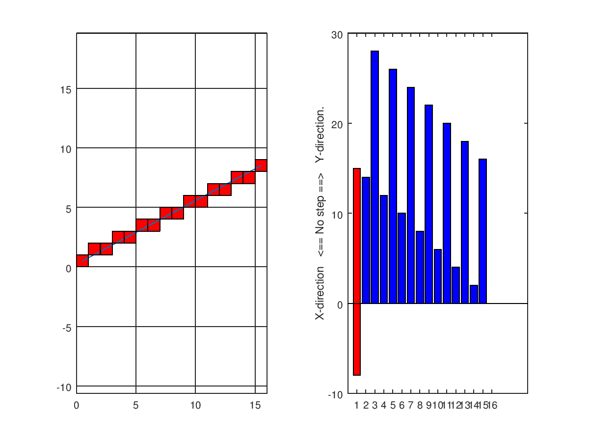

This short story is about working with raster graphics, especially how to draw one of the most basic geometric shapes with them: a line. Of course one might complain, that this is understood for many years and even GNU Octave provides many high-level plotting routines like plot, etc.
I challenged this task with same biased attitude and had to find out that it is more difficult than expected, if one doesn't know the line algorithm of Bresenham from 1962. This line algorithm can easily be extended to draw ellipses therefore it is highly beneficial to understand it properly. Especially, if no such graphic libraries aren't around in your environment.
The only algorithm input are the coordinates of a line that should be drawn from some pixel $(x_{0},y_{0})$ to $(x_{1},y_{1})$. No certain order of these points is required, just that both are contained in the image raster, what should be self-explanatory.
x0 = 0; y0 = 0; x1 = 15; y1 = 8;
Before the algorithm starts, it it possible to compute some values in advance that do not change. For example the horizontal and vertical projections, $dx$ and $dy$, respectively. The first one is defined to be positive and the latter one negative.
dx = int32 ( abs (x1 - x0)); dy = int32 (-abs (y1 - y0));
As the result is a raster graphic, all quantities should be integer values. Therefore Octave requires some type conversion to int32, as the default datatype is the IEEE-754 double precision floating point number.
To handle arbitrary aligned lines, the signs $(sx,sy)$ of the endpoint difference serve as step in the respective direction.
sx = int32 (sign (x1 - x0)); sy = int32 (sign (y1 - y0));
Now comes the most important part of the algorithm: the error quantity.
As mentioned before, having opposite signs for $dx$ and $dy$ makes it
easy to determine from a single value if there is a step in X-, Y-, or
both directions necessary. In one sentence: if err grows too fast in
either direction $\pm$, hence the risk for not reaching the targeted
coordinate grows, the "path" is corrected by omitting one or more steps in
the too fast growing direction (see the right graphic below and the
explanation).
err = dx + dy;
The running variables $x$ and $y$ have to be of integer type and take the values of start point $(x_{0},y_{0})$.
x = int32 (x0); y = int32 (y0);
Perform some graphics setup and start the main loop of the line algorithm.
close all; clc; h1 = subplot (1, 2, 1); plot (h1, [x0, x1] + 0.5, [y0, y1] + 0.5); axis (h1, 'equal'); hold (h1, 'on'); grid (h1, 'on'); h2 = subplot (1, 2, 2); bar (h2, [dx, zeros(1, max(dx, -dy))], 'r'); axis (h2, 'equal'); hold (h2, 'on'); ylabel (h2, 'X-direction <== No step ==> Y-direction.'); bar (h2, [dy, zeros(1, max(dx, -dy))], 'r'); setPixel = @(x,y) rectangle (h1, 'Position', [x, y, 1, 1], 'FaceColor', 'r'); i = 1; % % Main loop of the actual line algorithm. % setPixel (x, y); while (x ~= int32 (x1) || y ~= int32 (y1)) e2 = 2*err; % These three lines don't belong to the algorithm bar (h2, [zeros(1, i), e2], 'b'); i += 1; %kbhit (); % uncomment for interactivity if (e2 > dy) err += dy; x += sx; endif if (dx > e2) err += dx; y += sy; endif setPixel (x, y); endwhile
The code above can be run interactively, if the respective line using kbhit is uncommented. Some final words to the graphics. The right graphic shows in red squared the resulting pixels for approximating the line within a coarse, but human perceivable, raster. The choice of these pixels is not natural on the first sight, but seen from some distance, it looks like a reasonable line within that raster.
The decision when not to step upwards becomes clear, when inspecting the
error quantity in the right image. Naturally, the line algorithm wants
to go one step up and one step right to reach the target pixel. The step
in Y-direction is omitted when the blue bar e2 exceeds the red bar dx
in positive direction (in the main loop the condition (dx > e2) is violated
then). Analogue for the X-direction, if the blue bar e2 exceeds the red
bar dy in negative direction.
In the given example, roughly speaking, every second blue bar exceeds the red bar, thus the resulting pixel pattern occurs in the right image.
This type of error correction happens for the ellipse in a similar way. Therefore if one understands the line drawing a solid technique for drawing ellipses even without external graphic libraries is understood.